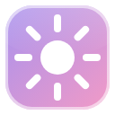

Headroom HDR
This site
Picture
Method
Split
Colours
Your two colours
Smooth playback
leave these as they areDiagnostics
Wiggle soundFor the A/B test
Alt+Shift+T runs the whole test by itself (3½ min)
Alt+Shift+A pacing on and off in turns (Stats on)